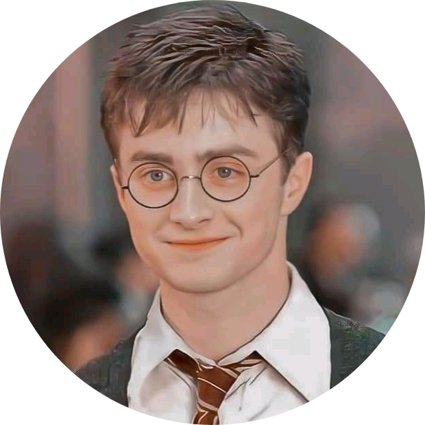
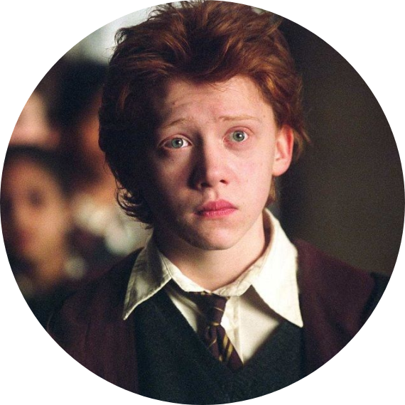

|

|
Daniel Radcliffe
English actor, producer, and singer.I am the best known for playing Harry Potter
in the Harry Potter film series during his adolescence and early adulthood.
|
SKILLS
- English actor ⭐⭐⭐⭐⭐
- Producer ⭐⭐
- singer ⭐⭐⭐⭐
|
HOBBIES
- Playing guiter ⭐⭐⭐
- Bike ridding ⭐⭐⭐⭐
- Playing golf,swimming ⭐⭐⭐⭐⭐
|
FRIENDS AND FAMILY
|
PERSONAL LIFE
In 2008, Radcliffe revealed that he has a mild form of the neurological disorder developmental coordination disorder (dyspraxia).
The motor skill disorder sometimes prevents him from doing simple activities, such as writing or tying his own shoelaces.
"I was having a hard time at school, in terms of being crap at everything, with no discernible talent", Radcliffe commented.[117]
In November 2007, Radcliffe published several poems under the pen name Jacob Gershon – a combination of his middle name and
the Jewish version of his mother's maiden name Gresham – in Rubbish,
an underground fashion magazine.[118][119]
He has had close friendships with his Harry Potter co-stars Tom Felton,[120] Rupert Grint and Emma Watson,
[121] and is close to his family, whom he credits for keeping him grounded.[122]
In August 2010, Radcliffe stopped drinking alcohol after finding himself becoming too reliant on it.[123]
Radcliffe has stated he is a fan of rap music and has "had an obsession with memorising complicated, lyrically intricate and fast songs."
He rapped Blackalicious' 1999 hit Alphabet Aerobics on The Tonight Show Starring Jimmy Fallon on 28 October 2014.[124][125]
 |
Emma Watson
English actress, model, and activist.I am the best known for playing Harry Potter
in the Harry Potter film series during his adolescence and early adulthood.
|
SKILLS
- English actress ⭐⭐⭐⭐⭐
- Model ⭐⭐
- Activist ⭐⭐⭐⭐
|
HOBBIES
- Reading novel ⭐⭐⭐
- Playing Hockey ⭐⭐⭐⭐
- playing role ⭐⭐⭐⭐⭐
|
FRIENDS AND FAMILY
|
PERSONAL LIFE
Watson is single, which she described in 2019 with the self-coined phrase "self-partnered".
[142][143] While promoting Noah, Watson was questioned about her faith, and she described herself as a spiritual Universalist.[144]
In February 2016, Watson was appointed visiting fellow at Lady Margaret Hall, Oxford University.
[145] Marai Larasi, an activist on the issue of violence against women, was her guest to the 75th Golden Globe Awards in 2018.[146]
|

|
Rupert Grint
English actor and singer.I am the best known for playing Harry Potter
in the Harry Potter film series during his adolescence and early adulthood.
|
SKILLS
- English actor ⭐⭐⭐⭐⭐
- Producer ⭐⭐
- singer ⭐⭐⭐⭐
|
HOBBIES
- Playing guiter ⭐⭐⭐
- Bike ridding ⭐⭐⭐⭐
- Playing golf,swimming ⭐⭐⭐⭐⭐
|
HOBBIES
- Reading book ⭐⭐⭐
- Playing beekeeping ⭐⭐⭐⭐
- playing role ⭐⭐⭐⭐⭐
|
FRIENDS AND FAMILY
|
PERSONAL LIFE
Grint is involved with various charities, having donated items such as clothes[75] to charity auctions,
as well as participating in the Wacky Rally in 2010 (with James and Oliver Phelps), which raised money for Britain's Royal National Lifeboat Institution.
[76] He was one of more than 40 participants to produce designs for Chrysalis Collection for Keech Hospice Care in Luton.
His piece, a painted butterfly, was auctioned on eBay in March 2010.[77][78]
During the 2009–10 influenza pandemic, Grint contracted H1N1 swine flu and suffered mild illness.[79]
In May 2011, along with other celebrities, Grint took part in the ad campaign for "Make Mine Milk" to promote drinking milk daily.
His ads could be seen on the sides of thousands of buses and posters across the United Kingdom.
[80] Grint supports Little Star Award since 2011 in support of Cancer Research UK.
"I think that it's wonderful that Cancer Research UK is helping to bring a little bit of magic to the children's lives in this way," said Grint.
[81]
 |
Best friends
Best friend is the person on whom I can truly count on all through my life.
Whenever I need help or support, my best friend is always there for me.
We have lived moments together and have created memories that will remain throughout my life.
Having a best friend like Mark makes my life easier.
|
These three are the best known for playing Harry Potter
in the Harry Potter film series during his adolescence and early adulthood,that written by J.K Rowling.